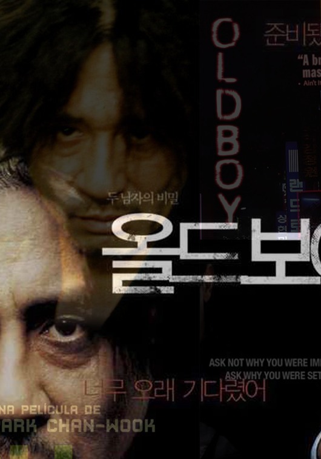

Oldboy
Park Chan-wook
The film follows the story of Oh Dae-su, who is imprisoned in a cell which resembles a hotel room for 15 years without knowing the identity of his captor or his captor's motives. When he is finally released, Dae-su finds himself still trapped in a web of conspiracy and violence. His own quest for vengeance becomes tied in with romance when he falls in love with an attractive young female sushi chef.
The Korean version of the poster has the images of two men. On the right side, there is a man well dressed with the text "Are you ready" written beside him. On the left side, there is a man who looks shabby and exhuasted with the text "I've waited too long" written beside him. It is a simple poster implying the conflict that occurs in the movie.
The US version of the poster has a background of a street in Korea filled with neon signs. The title is also designed to resemble a neon sign. There is a man and a woman walking forward in the center of the poster. The poster shows the three awards that the movie received, and a quote that says "A brilliant masterpiece" to promote the movie abroad.
The Spanish version of the poster is using black and green. The shabby looking man is holding a hammer as if he is about to hit on something or someone. This poster is misleading, because might lead the audience to think that he might be a killer. This poster also contains the award received on the left upper corner.
Overall, the US version of the poster is doing a great job at showing the setting of the movie. Neither the Korean or Spanish version features the image of the woman. Having seen the movie, it is reasonable to include the image of the woman who appears to be trusting and following the man.